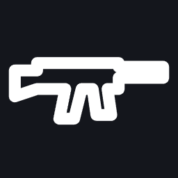
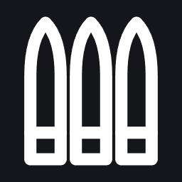

Characters and HUD
Who you play, how you make them, and what you see on screen.
Creating your character
Designed Every face is a MetaHuman.
PresetFaceBodyImplants and scarsVoiceOriginLoadoutConfirm
| Step | Choices |
|---|---|
| Preset | 12 curated MetaHumans with a balanced range of looks |
| Face | Sliders for jaw, brow, nose, cheeks and lips; iris colour, sclera tint, small scars; live preview with breathing and eye movement |
| Body | Height within ±15 %, musculature, limb length, posture |
| Implants and scars | Alien biotech: glowing nodes, plates under the skin; tattoos |
| Voice | 8 voice packs with lip sync; pitch |
| Origin | Sets a starting talent point, a unique starter item and a three-step intro quest |
| Loadout | A weapon type and a survival tool |
Open question The direction asks for 120 face sliders while you play. MetaHuman creation is an editor tool, so the prototype starts with the presets plus body, materials, tattoos and implants; changing faces in the game is its own research step (OQ-03).
Origins
Scientist
Soldier
Scavenger
Corporate Envoy
Each gives a starting talent point, a starter item and an intro quest; the details are still to be written.
The first preset
One of the twelve presets exists as data so far.
| Name | Ari Voss |
| Origin | Soldier |
| Height | 1.82 m |
| Implant | imp_neural_node_01, colour #00FFCC, glow 0.6 |
| Starter weapon | AR01 |
| Starter tool | field_scanner |
| Notes | Balanced soldier preset with slight jaw and high cheekbones. |
The HUD
Layout for a 1920 × 1080 screen; it scales with resolution.
The death screen lists what you dropped, the respawn options, a recovery timer and a ping for teammates.
HUD icons
Designed Twelve placeholder line icons for the Prototype HUD, white on a clear background so the HUD can tint them; shown here on a dark tile. Select one to see it full size; the PNG link under each is the transparent file the game uses. The art direction is still the owner's.







Menus
- Inventory: a grid with a weight limit, quick-craft recipes and filters.
- Map: layers for PvP zones, resource nodes and dungeon entrances; several zoom levels.
- Quest log: objectives, stages, lore entries and map markers.
- Loading screens: tips, the status of PvP hotspots, your last base and active quests, with MetaHuman close-ups.
- Accessibility: UI scale, colour-blind modes, subtitle sizes, controller remapping; offered at first launch.